Everything in Fiber is woven: people, monsters, places, even light. So the interface should be made of the same stuff. Every panel is a patch of cloth, every button is sewn on, and every label is a scrap pinned to the fabric.
I ran the UI as one big design map: a single question (“what does Fiber’s UI look like?”) broken into small tickets for fonts, panels, icons, the HUD, every major screen, and finally a real Godot Theme. My agents built two or three working prototypes per ticket and captured screenshots of each, and I picked a direction, wrote down why, and moved to the next question. These are the decisions that stuck.
Where it started
The first pass was functional and not much else: a placeholder parchment texture, dense tables of text and a menu kit from a third-party icon pack.

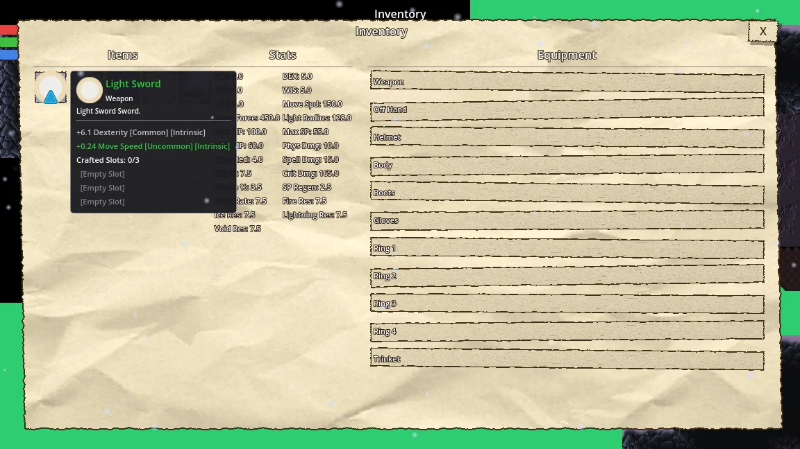

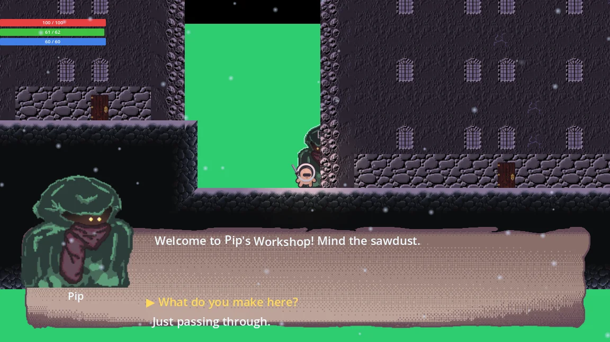
Paper first
The first real prototype was the inventory, on warm paper. That pass settled most of the layout that’s still in the game:
- Menus are a full-screen overlay that never pauses the game, because your friends are still playing.
- A character pane on the left third (identity, vitals, a five-attribute star and stat cards), with items and a material wallet filling the rest.
- Two shades per rarity grade, one for light panels and one for dark, each at about 4.5:1 contrast. One set of grade colors fails on light panels.
- The item popover groups affixes into tinted bands by where they came from (intrinsic, crafted or corrupted), with a comparison against what you have equipped.

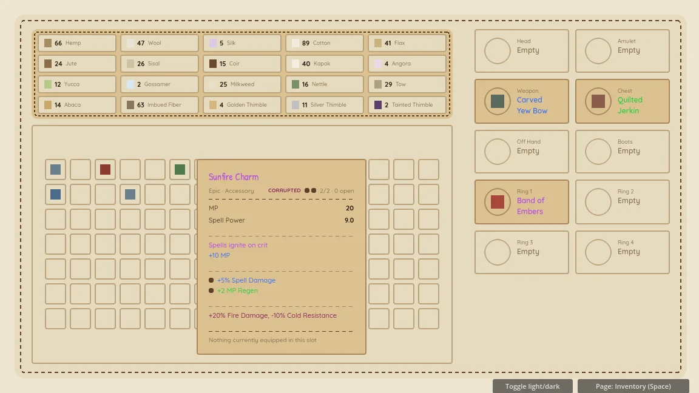

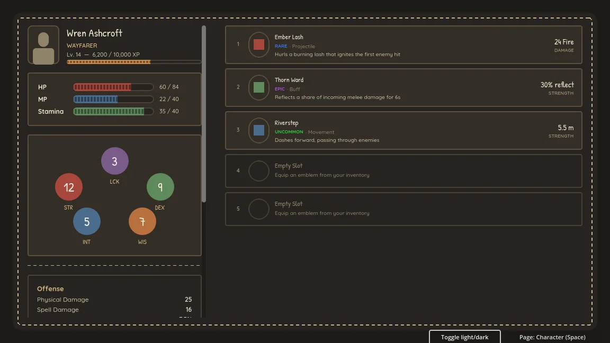
Patches, not paper
Next, the panels became fabric. To pick a cloth, I had a tuning harness built where I could swap weaves and drag sliders for corner radius, corner taper, thread spacing, and how much the edges fray.

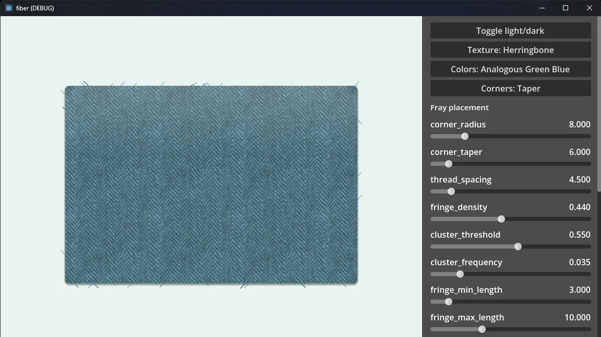

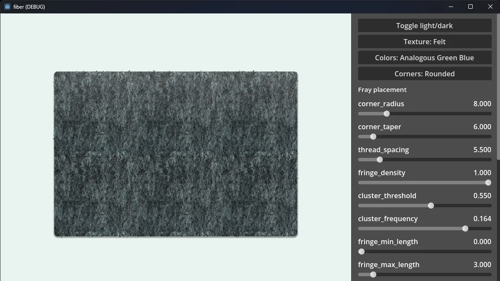
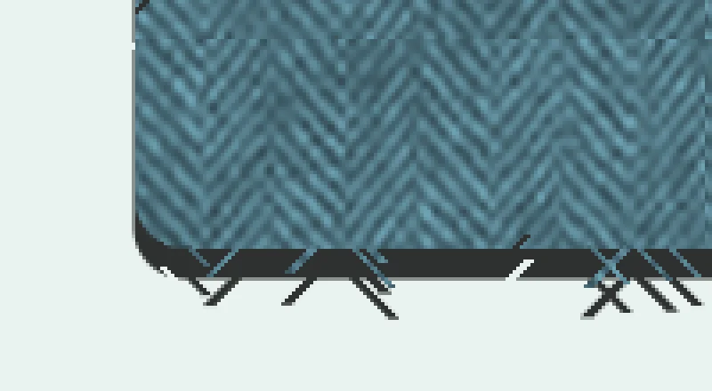
Herringbone won. The fabric is a live shader rather than a baked texture, and each panel gets its own seed, so no two patches fray the same way. Two rules came out of living with it:
Text sits on a card
Never put text straight onto the weave. It always gets a flat card underneath.
No patch in a patch
A fabric panel never nests inside another fabric panel. It turns to noise.
One seam per panel
One dashed seam, inset from the edge. Everything else is solid.
That last one took a round of over-stitching to learn. An early menu pass put dashes on the panel edge, an inner echo, the title, every button and the divider. It looked like a sewing pattern instead of a menu. Now each panel gets exactly one dashed seam, dividers are solid, and buttons are sewn-on pills: a dome shape with a solid double ring and a little cluster of stitch dots at each end.

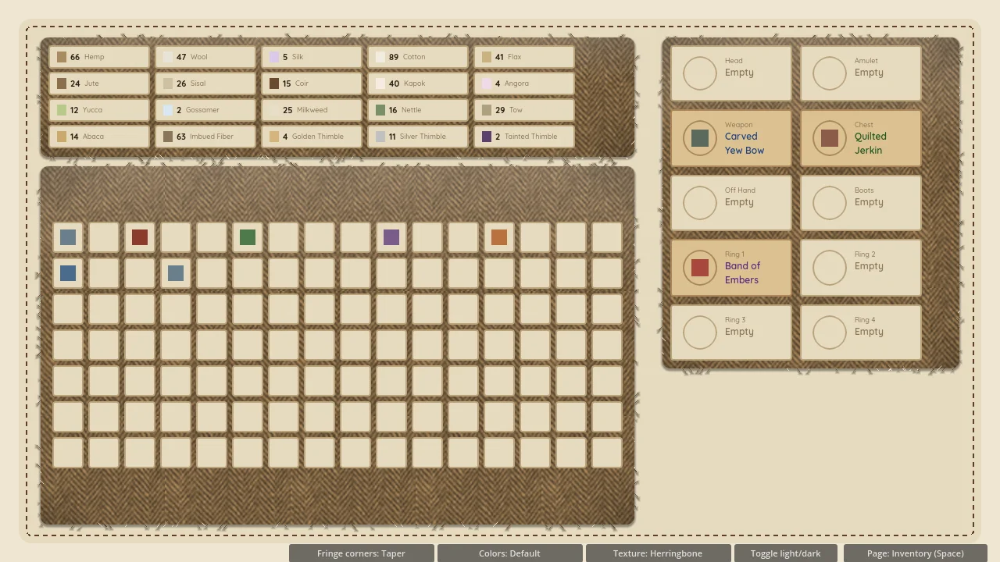

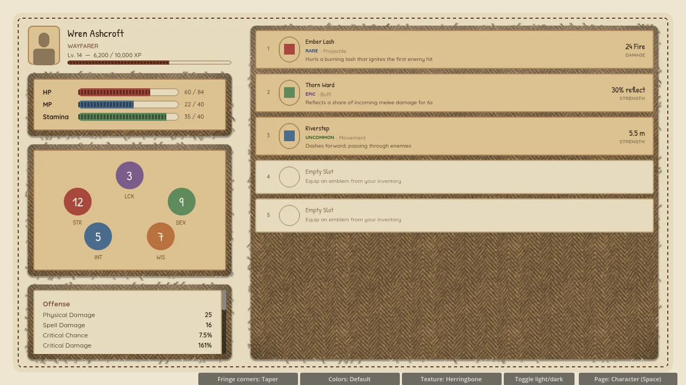
The HUD
Three layouts went head to head: a docked stack in the top-left corner, a cluster at top center with slots on either side, and a compact badge in the bottom corner. I picked the docked stack: HP, SP and MP stacked at one fixed width, with the numbers taking up any spare room.


The bars are stitched: a dense run of stitches in each resource’s color. Taking damage plays a quick slash at a random angle across the lost section, which then splits in two and flies apart. The weapon and shield slots later gave way to a two-row status strip, with buffs on top and debuffs below on red thread.
Going blue
After trying warm, green-blue and blue-violet palettes, I settled on blue. Fiber ships in blue-dark, with a matching blue-light built for a settings toggle later. Before locking it in, I checked the palette’s contrast against its own tokens and fixed three failures: thread color on the light theme (1.26:1, now 5.45:1), the primary button fill in the dark theme (4.3:1, now 5.6:1), and text-field borders (under 2:1, now 6.9:1 or better).
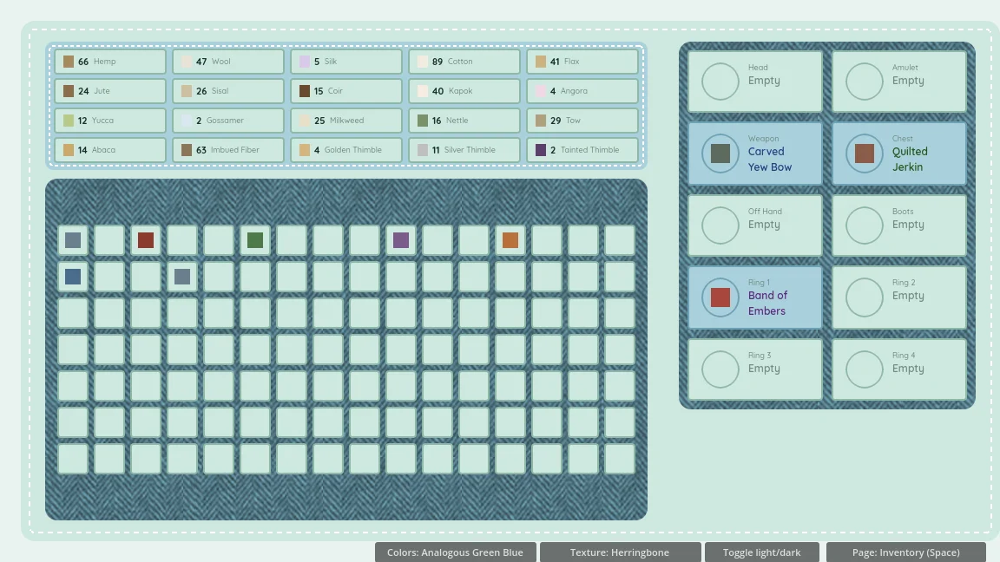

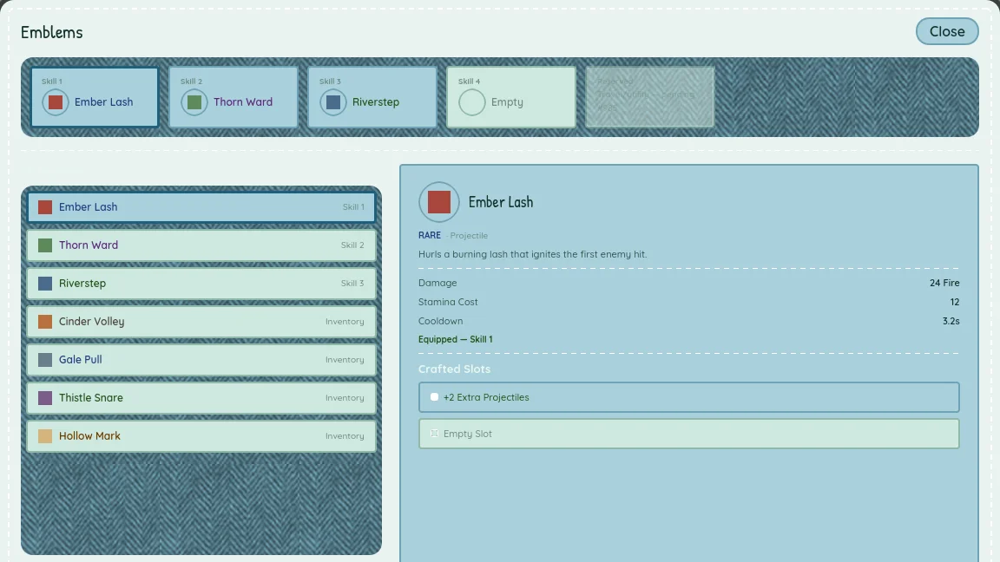

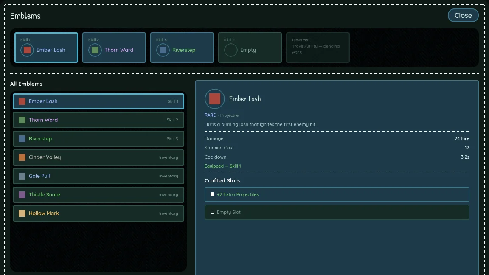
The emblem screen went from three columns to two after feedback: a browser on the left, and one detail panel on the right with its crafted slots folded in underneath. The affix picker and the unstitch confirmation pop up as centered modals instead of crowding a column.
Hang tags and twine
Pip’s shop lists its wares as hang tags, two to a row on herringbone, and the item you’re looking at gets one big tag with stat changes, what you have against what it costs, and sewn buttons. The tag hangs from a loop threaded through a punched hole, in front on one side and behind on the other. I tried satin and ribbon loops, a bow and a thin cord, and picked twine.
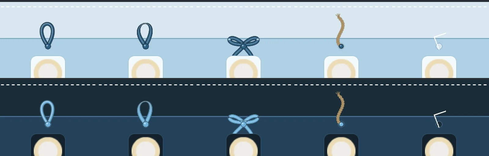
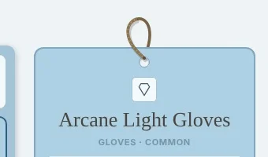
The auction house
The auction house reuses the shop’s hang tags for listings and stall details. Reviewing the prototype turned up real interaction gaps, so it gained:
- A listing price builder: pick materials and grades, set amounts, and preview the cut before you list.
- Browse, a refreshable grid of other players’ stalls, one fabric panel per stall.
- Search, a two-column trade search with match-all or match-any stat filters, inspired by Path of Exile’s trade site.

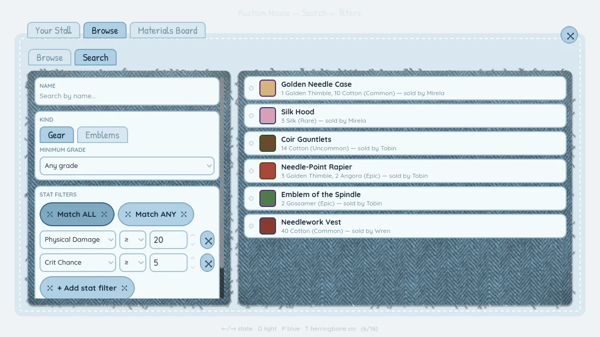

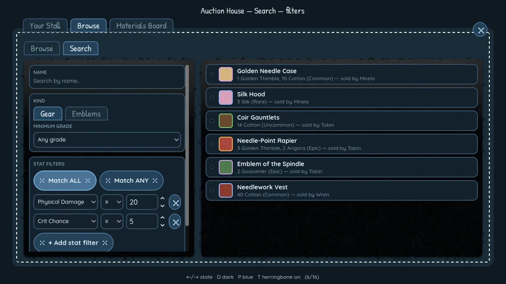

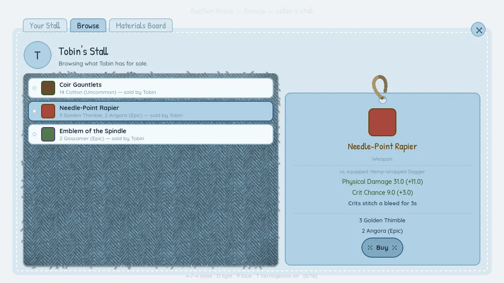

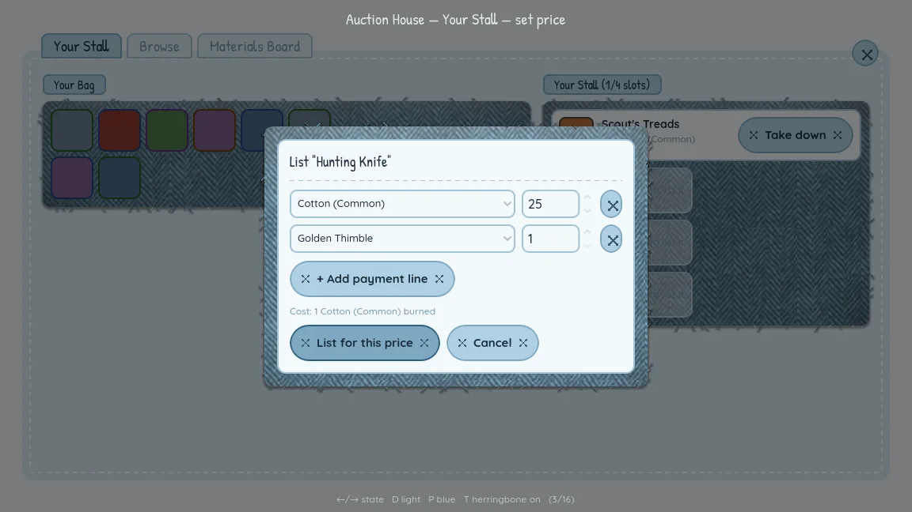
Fonts and icons
Research recommended Shantell Sans, which can cover headings and body text from one family. In the end I kept Quicksand for text and Patrick Hand for headings, because every real screen had already been judged in that pair. Literal stitched or embroidered fonts were ruled out early: they’re hard to read, and licensing was a problem.
Icons are distilled glyphs, not little fabric sprites. Item icons are filled silhouettes in natural colors, independent of rarity. Menu and stat icons are single-line strokes, and every icon shares a 1.5px stroke on a 64×64 canvas.
A design system that follows the game
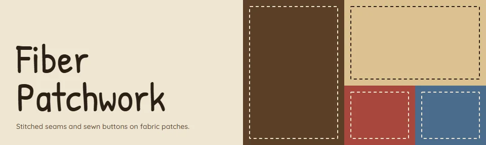
Alongside the game, a design system called Fiber Patchwork holds the tokens and components. Its rule is that the game is the source of truth: whenever a prototype settled something, the system was updated in the same session. Once the Theme landed, I synced it to the real Godot values, which caught real drift. The button label style had said bold 15px while the game rendered medium 14px.
In the game, the shared pieces live in one place: SeamPanel, SewnButton, TexturedSurface, TitlePatch and HangTag, all reading their colors from the Theme. Pulling them out of the prototypes caught more drift. Five copies of the tilted title patch disagreed on the angle (−3° won, four to one), and six prototypes disagreed on the divider color.
The HUD, menus and dialog box now run on the new kit in the real game. Inventory, emblems and character creation are next.